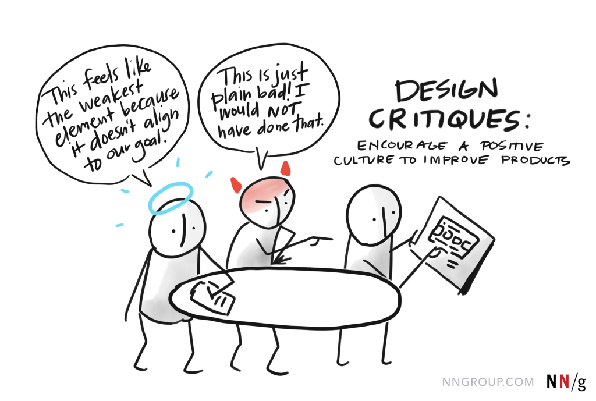

How to ask for feedback in a way that produces useful input instead of scattered opinions.

View full imageWhy asking for feedback can be a trap
Asking for feedback is crucial, but it can become unproductive when the request is too vague. “What do you think?” often leads to personal opinions, scattered reactions or comments that do not help the design move forward.
The key is preparation. Designers need to guide feedback so that it is constructive, relevant and connected to the stage of the work.
Contextualize your design decisions
Every design element should have a purpose. When presenting your work, explain the reasoning behind the main choices.
Why did you choose this color palette? What logic supports the layout? How does the typography improve readability? These explanations help reviewers understand the intent behind the design.
Context does not mean overexplaining every pixel. It means giving people the right frame to evaluate the work.
Educate your audience
Not everyone giving feedback has a design background. Explaining concepts like visual hierarchy, spacing, usability and accessibility can help people critique the work more effectively.
This shifts the conversation away from personal preference and toward design effectiveness.
Set clear goals for feedback
Be specific about what you want feedback on. Instead of asking for general reactions, ask questions like: Is the navigation clear? Does the hierarchy support the main task? Does the color system reinforce the brand message?
Specific questions make feedback easier to act on and prevent the conversation from drifting.
Build a healthy feedback environment
Feedback should feel like an opportunity for improvement, not a judgment of personal ability.
Structured forms, group critique sessions and clear follow-up can help create a better environment. Showing appreciation and explaining how feedback was used also encourages better participation over time.
Be receptive and flexible
Being open to suggestions is important, but so is knowing when to defend a design decision using data, principles and user needs.
The best feedback process balances humility with professional judgment.
What improves when feedback is framed well
Better feedback improves the quality of the design process. It reduces stress, makes decisions clearer and helps teams move faster.
When designers contextualize decisions, educate reviewers, ask specific questions and stay open to improvement, feedback becomes a powerful tool instead of a frustrating ritual.
takeaway